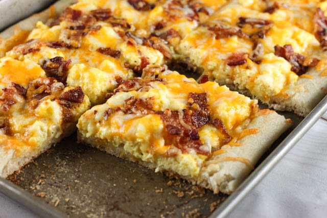

Breakfast Pizza

Mouth watering pizza filled with different breakfast foods
This pizza is just the perfect all-round breakfast meal. It has a little bit of everything that mesh very well together.
The crescent-roll crust gives a nice crispy and flakey taste. Adding in the bacon, hash browns, and cheese gives that extra tasty punch.
Ingredients
- 1 cup of bacon bits
- 1 (8 ounce) package refrigerated crescent rolls
- 1 cup frozen hash brown potatoes, thawed
- 1 cup shredded cheese
- 5 eggs
- ¼ cup milk
- ½ teaspoon salt
- ⅛ teaspoon ground black pepper
- ¼ cup grated Parmesan cheese
Directions
- Preheat the oven to 375 degrees F (190 degrees C).
- Separate crescent-roll dough into triangles and place in a rimmed 12-inch pizza pan, points toward the inside. Press the triangles together to join; pinch dough so it comes 1 1/2 inches up the sides of the pan.
- Spoon bacon bits over crust. Spread hash browns over sausage and sprinkle with Cheddar. Whisk eggs, milk, salt, and black pepper in a bowl until smooth and pour egg mixture over cheese. Sprinkle pizza evenly with Parmesan.
- Bake in the preheated oven until eggs are set and crust is lightly browned, 25 to 30 minutes.